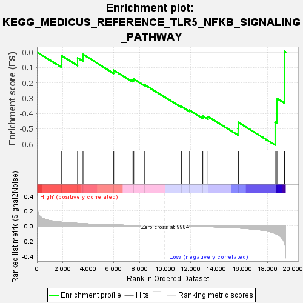
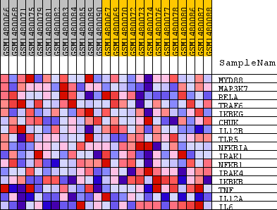
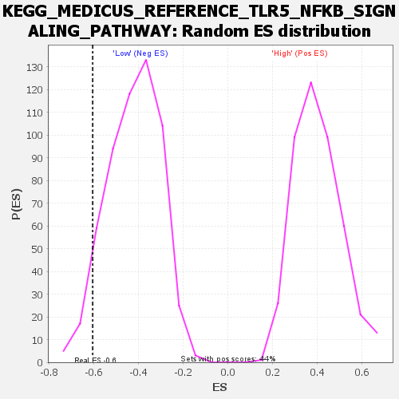

| Dataset | WG6v3.CPT1A.cls#High_versus_Low.CPT1A.cls#High_versus_Low_repos |
| Phenotype | CPT1A.cls#High_versus_Low_repos |
| Upregulated in class | Low |
| GeneSet | KEGG_MEDICUS_REFERENCE_TLR5_NFKB_SIGNALING_PATHWAY |
| Enrichment Score (ES) | -0.6060738 |
| Normalized Enrichment Score (NES) | -1.4361421 |
| Nominal p-value | 0.055555556 |
| FDR q-value | 0.5924661 |
| FWER p-Value | 1.0 |

| SYMBOL | TITLE | RANK IN GENE LIST | RANK METRIC SCORE | RUNNING ES | CORE ENRICHMENT | |
|---|---|---|---|---|---|---|
| 1 | MYD88 | MYD88 | 1932 | 0.051 | -0.0249 | No |
| 2 | MAP3K7 | MAP3K7 | 3169 | 0.034 | -0.0381 | No |
| 3 | RELA | RELA | 3595 | 0.030 | -0.0155 | No |
| 4 | TRAF6 | TRAF6 | 5994 | 0.014 | -0.1186 | No |
| 5 | IKBKG | IKBKG | 7412 | 0.008 | -0.1798 | No |
| 6 | CHUK | CHUK | 7558 | 0.008 | -0.1762 | No |
| 7 | IL12B | IL12B | 8416 | 0.005 | -0.2133 | No |
| 8 | TLR5 | TLR5 | 11276 | -0.004 | -0.3547 | No |
| 9 | NFKBIA | NFKBIA | 11918 | -0.006 | -0.3787 | No |
| 10 | IRAK1 | IRAK1 | 12948 | -0.010 | -0.4172 | No |
| 11 | NFKB1 | NFKB1 | 13359 | -0.012 | -0.4211 | No |
| 12 | IRAK4 | IRAK4 | 15704 | -0.029 | -0.4997 | Yes |
| 13 | IKBKB | IKBKB | 15720 | -0.029 | -0.4581 | Yes |
| 14 | TNF | TNF | 18593 | -0.100 | -0.4579 | Yes |
| 15 | IL12A | IL12A | 18737 | -0.110 | -0.3030 | Yes |
| 16 | IL6 | IL6 | 19332 | -0.229 | 0.0046 | Yes |

